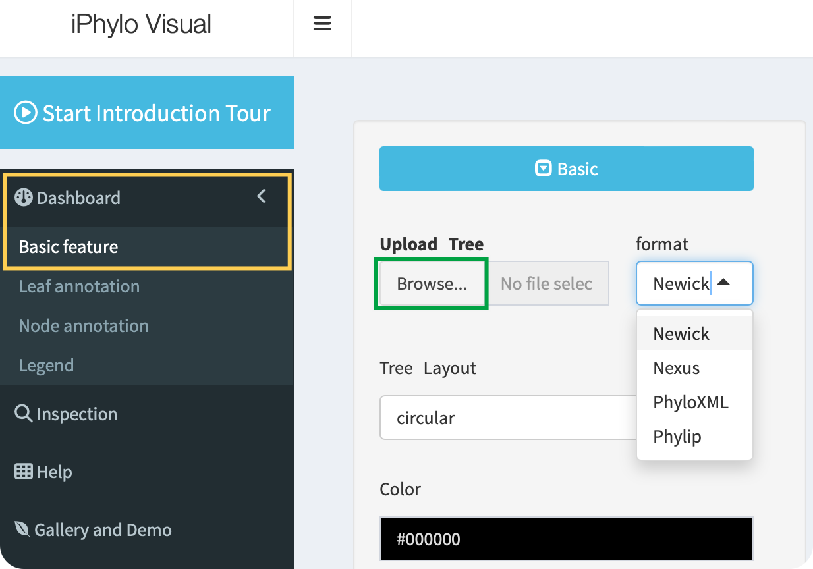
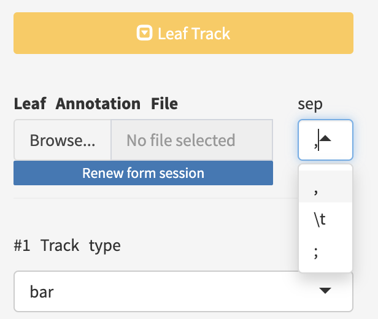
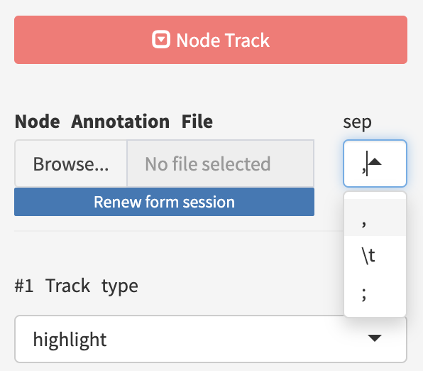
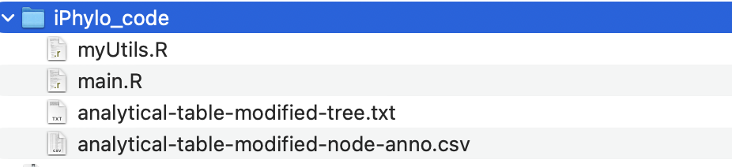

10 Data
10.1 Import
This guide will walk you through the process of preparing your data for annotation. To make the most of our tool, follow these steps:
Step 1: Upload Tree File
- Select and Upload Tree File
- Click the
Browsebutton on the page. - Choose your tree file (typically in Newick, Nexus, PhyloXML, etc., formats).
- Click the
Step 2: Annotation Files (Optional)
If you want to add annotations to your tree, you can upload optional Leaf Annotation and Node Annotation files.
- Leaf Annotation File
- Prepare a file containing annotations for each leaf of the tree.
- This file may include information like labels, colors, or other details for individual leaves.
- Node Annotation File
- Prepare a file containing annotations for nodes in the tree.
- This file might include data for internal nodes, helping you provide additional context to your tree.
10.1.1 Tree file

Click the Browse button to upload a tree file in the Newick, Nexus, PhyloXML, or Phylip tree formats:
- Newick Format:
Description: Newick, also known as New Hampshire or New Hampshire Extended format, is a simple and widely used text-based format for representing phylogenetic trees. It expresses tree structures using nested parentheses and commas.
Example:
(A:0.1,B:0.2,(C:0.3,D:0.4):0.5);Usage: It’s commonly used for representing hierarchical relationships in evolutionary biology and bioinformatics.
- Nexus Format:
Description: Nexus is a versatile file format that can store various types of biological data, including phylogenetic trees. It allows the inclusion of metadata, DNA/protein sequences, and more. It is both human-readable and writable.
Example:
#NEXUS Begin trees; Tree myTree = (A,B,(C,D)); End;Usage: Nexus is often used in phylogenetics, systematics, and evolutionary biology due to its flexibility.
- PhyloXML:
Description: PhyloXML is an XML-based format designed to store and exchange phylogenetic trees and associated data. It supports a variety of information, including node labels, branch lengths, and annotations.
Example:
Usage: PhyloXML is suitable for storing and sharing complex phylogenetic data, often used in bioinformatics.
- Phylip Format:
Description: The Phylip (PHYLogeny Inference Package) format is a simple, line-based format developed for use with the Phylip software package. It is used to represent both sequence data and phylogenetic trees.
Example:
4 A 0.0 0.1 0.2 B 0.1 0.0 0.3 C 0.2 0.3 0.0 D 0.3 0.2 0.1Usage: Phylip format is commonly used for input and output in phylogenetic analysis software and tools.
These formats cater to different needs, from simple tree representations to more complex structures with additional metadata. The choice of format often depends on the specific requirements of the analysis or tool being used.
10.1.2 Leaf annotation

Click the Browse button to upload a leaf annotation file with the ,, \t, or ; separators:
When preparing your leaf annotation file, follow these guidelines for proper formatting:
- Column Names:
- The first column must be named “id” and corresponds to the identifiers of the leaves in your tree.
- ID Repetition:
- IDs can be repeated for multiple annotations. Any ID not matching a leaf in the tree will be ignored.
- Avoid Reserved Columns:
- Do not include built-in column names such as “parent,” “node,” “branch.length,” “label,” “isTip,” “x,” “y,” “branch,” and “angle.”
- Example:
Suppose you have a tree with the following leaf IDs:
- Leaf 1: “A”
- Leaf 2: “B”
- Leaf 3: “C”
Your leaf annotation file should look like this:
id,annotation1,annotation2
A,value1,infoA
B,value2,infoB
C,value3,infoC
A,value4,infoD
B,value5,infoEIn this example, “id” corresponds to the leaf IDs in your tree, and you can add multiple annotations for each leaf. Columns beyond “id” can be used to provide additional information for each leaf.
10.1.3 Node annotation

Click the Browse button to upload a node annotation file with the ,, \t, or ; separators:
When preparing your node annotation file, follow these guidelines for proper formatting:
- Column Names:
- The first column must be named “id” and corresponds to the identifiers of the leaves in your tree.
- ID Repetition:
- IDs can be repeated for multiple annotations. Any ID not matching a node in the tree will be ignored.
- Avoid Reserved Columns:
- Do not include built-in column names such as “parent,” “node,” “branch.length,” “label,” “isTip,” “x,” “y,” “branch,” and “angle.”
- Example:
Suppose you have a tree with the following internal node IDs:
- Internal Node 1: “N1”
- Internal Node 2: “N2”
- Internal Node 3: “N3”
Your leaf annotation file should look like this:
id,annotationX,annotationY
N1,valueX1,valueY1
N2,valueX2,valueY2
N3,valueX3,valueY3
N1,valueX4,valueY4
N2,valueX5,valueY5In this example, “id” corresponds to the internal node IDs in your tree, and you can add multiple annotations for each node. Columns beyond “id” can be used to provide additional information for each node.
Remember, the correct file format and adherence to the mentioned guidelines will ensure successful annotation.
10.1.4 Session
To restore your work and retrieve your saved data, you can use the Upload Session component to upload the session file with the “.iphylo” extension.
The iPhylo Visual emphasizes the ease of exporting and replicating tree displays using the work session files. The unique exported “.iphylo” files pack all essential data for generating trees with iPhylo. These files are extremely compact, with a size of 30kB for a well-annotated tree of 1000 species. All tree-annotation sessions can be saved to and uploaded from the local computer, enabling the users to fine-tune complex trees while maintaining control over the original data. Moreover, the session files can facilitate cooperative annotation projects.
10.2 Export
10.2.1 Export image
iPhylo Visual provides different image export formats for trees, namely, PNG, PDF, and JPEG.
10.2.2 Save session
iPhylo Visual offers a session saving feature that allows you to save your work at any point during the annotation process. Simply click the Save Session button to save your data and selected options for the current page.
10.2.3 Download R scripts
Importantly, iPhylo Visual’s Export Code feature exports all the raw data and plotting code for the visualized and annotated tree in one click.
The package includes the tree file, the annotation table, detailed annotation parameters recorded in a JSON file, and an R script for visualizing the data:

By running this script locally (source main.R), users can replicate the tree visualization as seen in iPhylo Visual. Advanced users proficient with R programming can further customize the tree by modifying the code.